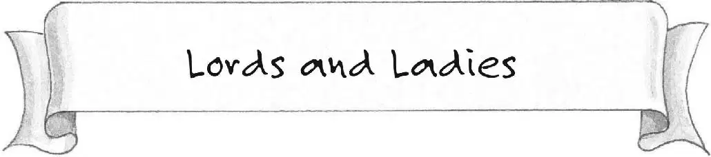
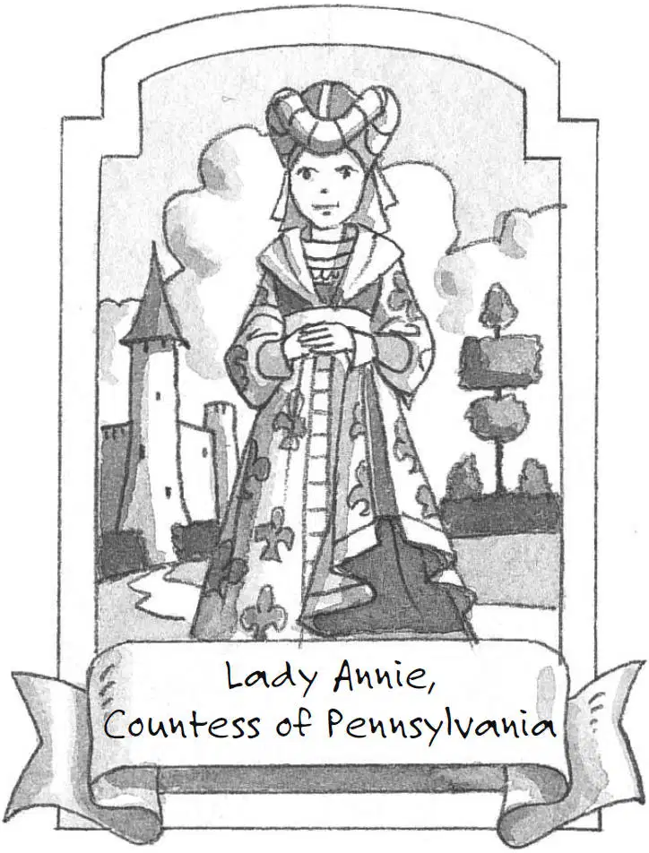
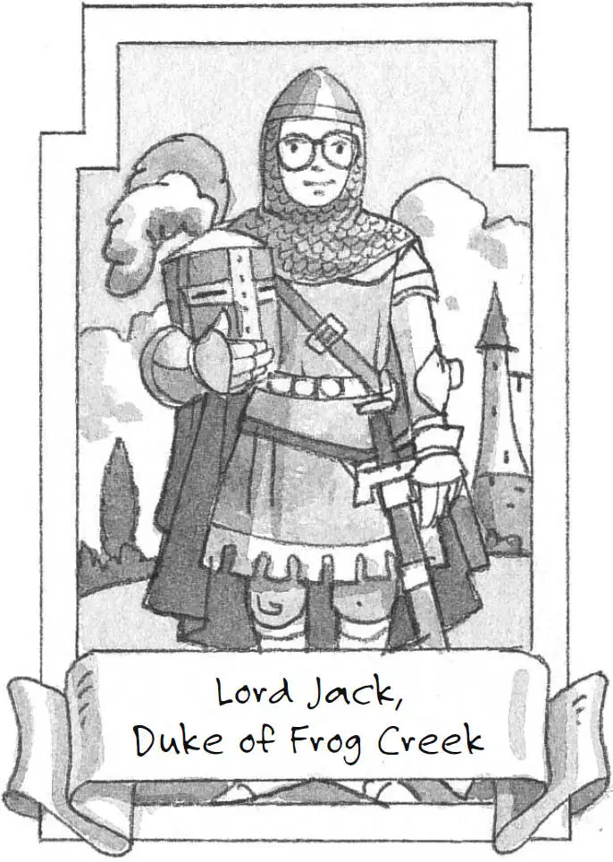

In the Middle Ages, most rich people were nobles. Nobles came from families that had been wealthy for a long time.

Noble women were called ladies. They could also have titles, such as baroness, duchess, or countess.

Noble men sometimes had titles such as baron, duke, or count.
The feudal system helped keep order during the Middle Ages. But it wasn’t very fair.
A person almost always had to be born into the nobility. Even people who worked very hard and became rich could not normally become nobles.
Today in Europe, America, and many other places around the world, people are free to try to be almost anything they want.